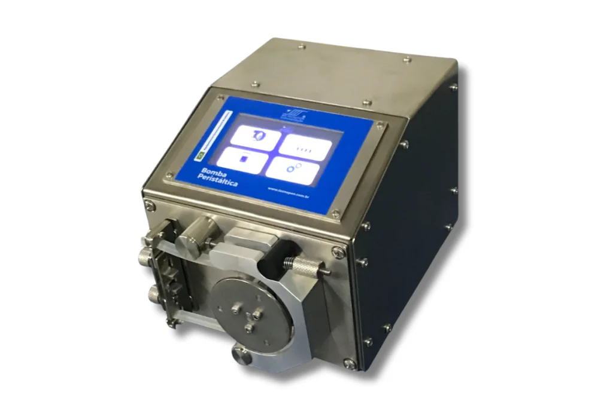

Bomba peristáltica analógica de bancada
- Vazão
- 0,1 a 150 ml/min
- Canais
- 1
- Exatidão
- Melhor que 1%
Fabricante nacional de instrumentos científicos
Bombas peristálticas
Nossas bombas têm projeto próprio e fabricação nacional. Custam menos que as europeias e os tubos de reposição estão na loja online.

Linha touch screenVazão e dosagem ajustadas na tela47 modelos na linhaFabricação nacionalProjeto e produção no Brasil
Assistência e calibraçãoCuidamos dos nossos produtos depois da venda
Projetos sob medidaDo equipamento especial ao OEM
Revendas em todo o paísAtendimento próximo, onde você estiver
Aplicações
Como o líquido só toca o tubo, a bomba peristáltica dosa e transfere fluidos que não podem ser contaminados. A escolha do modelo começa pela vazão que a aplicação pede.
0,1 a 150 ml/min
A LDP-101-3 bombeia e dosa soluções e meios de cultura, com volume ajustável de 1 a 1.000 ml.
LDP-101-30,05 a 100 ml/min
A LDT-105-8 reúne cinco canais na mesma bomba, com vazão e dosagem ajustadas na tela touch screen.
LDT-105-81 a 1.200 ml/min
A LDP-305-4, de 5 canais, é especialmente útil no envase e no enchimento de frascos, com rapidez e exatidão.
LDP-305-41 a 4.000 ml/min
A LDP-301-4 bombeia e dosa volumes maiores, com rotação de 1 a 600 RPM.
LDP-301-4Modelos
Compare os modelos mais procurados e adicione ao pedido os que interessam. Se preferir, descreva a aplicação no pedido, e nossa equipe ajuda a indicar o modelo.
| Modelo | Tipo | Canais | Vazão | Rotação | Exatidão | Ação |
|---|---|---|---|---|---|---|
| LAP-101-3 | Analógica de bancada | 1 | 0,1 a 150 ml/min | 0,13 a 250 RPM | Melhor que 1% | Adicionar ao pedido |
| LDP-101-3 | Digital de bancada | 1 | 0,1 a 150 ml/min | 0,13 a 300 RPM | Melhor que 0,5% | Adicionar ao pedido |
| LDP-301-4 | Digital de alta vazão | 1 | 1 a 4.000 ml/min | 1 a 600 RPM | Melhor que 0,5% | Adicionar ao pedido |
| LDP-201-3 | Touch screen | 1 | 1 a 1.000 ml/min | 0 a 300 RPM | Melhor que 1% | Adicionar ao pedido |
| LDT-105-8 | Touch screen, 5 canais | 5 | 0,05 a 100 ml/min | 0 a 300 RPM | Melhor que 0,5% | Adicionar ao pedido |
Nacional ou importada
Na escolha entre uma bomba nacional e uma importada, costumam pesar o preço, a assistência e a reposição. Nos três pontos, fabricar no Brasil faz diferença.
Se você usa hoje uma bomba importada, envie o modelo ou os dados da aplicação. Nossa equipe indica o modelo equivalente, quando houver.
| O que avaliar | Como é com as nossas bombas |
|---|---|
| Preço | Menor que o das bombas europeias |
| Assistência técnica | No Brasil, feita pela equipe da fábrica |
| Tubos de reposição | Na loja online, com preço no site |
| Projeto especial | Versões sob medida, OEM e white label |
| Com quem você fala | Direto com o fabricante |
Orçamento
Adicione ao pedido as bombas que interessam ou descreva a aplicação.
Informe seus dados de contato e, se quiser, inclua outros equipamentos na mesma lista.
Nossa equipe comercial responde com preço, prazo e frete.
Dúvidas frequentes
As bombas são vendidas por orçamento. Você envia o pedido pelo site e nossa equipe comercial responde com preço, prazo e frete.
Depende da vazão, do tubo e do controle que a aplicação exige. Envie o modelo atual ou os dados da aplicação, e nossa equipe indica o modelo equivalente, quando houver.
Na nossa fábrica, pela mesma equipe que projeta e fabrica as bombas.
Na nossa loja online. Os tubos têm preço no site e são comprados diretamente, sem orçamento.
Sim. Desenvolvemos versões sob medida e fornecemos em regime OEM e white label. O projeto começa por uma conversa sobre a aplicação.
Sim. Temos uma rede de revendas no país. Se preferir, peça o orçamento pelo site e indicamos o caminho.
Orçamento
Informe seus dados e, se puder, conte o que será bombeado e a vazão desejada. Nossa equipe comercial responde com preço, prazo e frete.